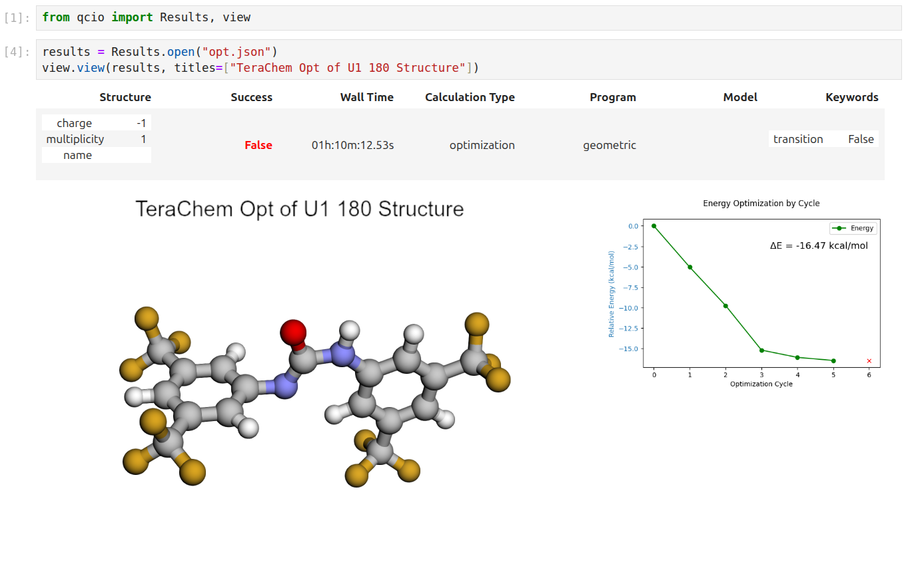
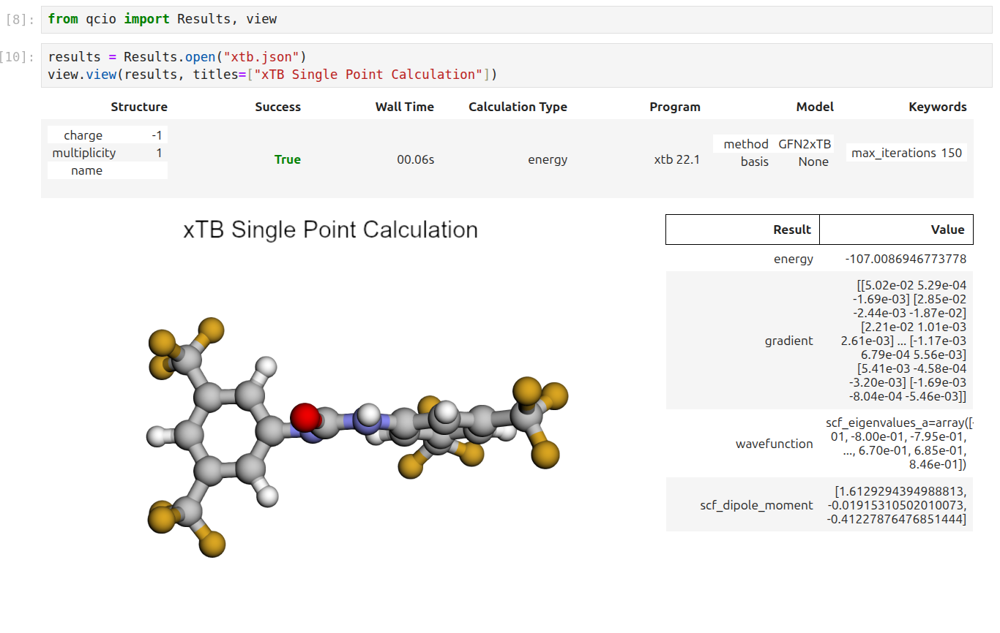

Quantum Chemistry Operate¶
A package for operating Quantum Chemistry programs using qcio standardized data structures. Compatible with TeraChem, psi4, QChem, NWChem, ORCA, Molpro, geomeTRIC and many more.


qcop works in harmony with a suite of other quantum chemistry tools for fast, structured, and interoperable quantum chemistry.
The QC Suite of Programs¶
- qcconst - Physical constants, conversion factors, and a periodic table with clear source information for every value.
- qcio - Elegant and intuitive data structures for quantum chemistry, featuring seamless Jupyter Notebook visualizations.
- qcinf - Cheminformatics algorithms and structure utilities such as
rmsdand alignment, using standardized qcio data structures. - qccodec - A library for efficient parsing of quantum chemistry data into structured
qcioobjects. - qcop - A package for operating quantum chemistry programs using
qciostandardized data structures. Compatible withTeraChem,psi4,QChem,NWChem,ORCA,Molpro,geomeTRIC, and many more, featuring seamless Jupyter Notebook visualizations. - BigChem - A distributed application for running quantum chemistry calculations at scale across clusters of computers or the cloud. Bring multi-node scaling to your favorite quantum chemistry program, featuring seamless Jupyter Notebook visualizations of your data.
ChemCloud- A web application and associated Python client for exposing a BigChem cluster securely over the internet, featuring seamless Jupyter Notebook visualizations.
Installation¶
python -m pip install qcop
Quickstart¶
qcop uses the qcio data structures to drive quantum chemistry programs in a standardized way. This allows for a simple and consistent interface to a wide variety of quantum chemistry programs. See the qcio library for documentation on the input and output data structures.
The compute function is the main entry point for the library and is used to run a calculation.
from qcio import Structure, ProgramInput
from qcop import compute
from qcop.exceptions import ExternalProgramError
# Create the Structure
h2o = Structure.open("h2o.xyz")
# Define the program input
prog_input = ProgramInput(
structure=h2o,
calctype="energy",
model={"method": "hf", "basis": "sto-3g"},
keywords={"purify": "no", "restricted": False},
)
# Run the calculation; will return Results or raise an exception
try:
result = compute("terachem", prog_input, collect_files=True)
except ExternalProgramError as e:
# External QQ program failed in some way
result = e.results
result.input_data # Input data used by the QC program
result.success # Will be False
result.data # Any half-computed results before the failure
result.traceback # Stack trace from the calculation
result.logs # Logs from the calculation
result.ptraceback # Shortcut to print out the traceback in human readable format
raise e
else:
# Calculation succeeded
result.input_data # Input data used by the QC program
result.success # Will be True
result.data # All structured data and files from the calculation
result.data.files # Any files returned by the calculation
result.logs # Logs from the calculation
result.plogs # Shortcut to print out the logs in human readable format
result.provenance # Provenance information about the calculation
result.extras # Any extra information not in the schema
One may also call compute(..., raise_exc=False) to return a Results object rather than raising an exception when a calculation fails. This may allow easier handling of failures in some cases.
from qcio import Structure, ProgramInput
from qcop import compute
from qcop.exceptions import ExternalProgramError
# Create the Structure
h2o = Structure.open("h2o.xyz")
# Define the program input
prog_input = ProgramInput(
structure=h2o,
calctype="energy",
model={"method": "hf", "basis": "sto-3g"},
keywords={"purify": "no", "restricted": False},
)
# Run the calculation; will return a Results object
result = compute("terachem", prog_input, collect_files=True, raise_exc=False)
if not result.success:
# Same as except block above
else:
# Same as else block above
Alternatively, the compute_args function can be used to run a calculation with the input data structures passed in as arguments rather than as a single ProgramInput object.
from qcio import Structure
from qcop import compute_args
# Create the Structure
h2o = Structure.open("h2o.xyz")
# Run the calculation
result = compute_args(
"terachem",
h2o,
calctype="energy",
model={"method": "hf", "basis": "sto-3g"},
keywords={"purify": "no", "restricted": False},
files={...},
collect_files=True
)
The behavior of compute() and compute_args() can be tuned by passing in keyword arguments like collect_files shown above. Arguments can modify which scratch directory location to use, whether to delete or keep the scratch files after a calculation completes, what files to collect from a calculation, whether to stream the program logs in real time as the program executes, and whether to propagate a wavefunction through a series of calculations. Arguments also include hooks for passing in update functions that can be called as a program executes in real time. See the compute method docstring for more details.
See the /examples directory for more examples.
✨ Visualization ✨¶
Visualize all your results with a single line of code!
First install the visualization module:
python -m pip install qcio[view]
or if your shell requires '' around arguments with brackets:
python -m pip install 'qcio[view]'
Then in a Jupyter notebook import the qcio view module and call view.view(...) passing it one or any number of qcio objects you want to visualizing including Structure objects or any Results object. You may also pass an array of titles and/or subtitles to add additional information to the molecular structure display. If no titles are passed qcio with look for Structure identifiers such as a name or SMILES to label the Structure.

Seamless visualizations for Results objects make results analysis easy!

Single point calculations display their results in a table.

If you want to use the HTML generated by the viewer to build your own dashboards use the functions inside of qcio.view.py that begin with the word generate_ to create HTML you can insert into any dashboard.
Support¶
If you have any issues with qcop or would like to request a feature, please open an issue.